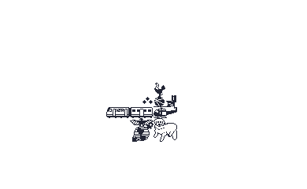
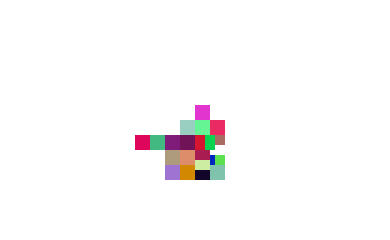
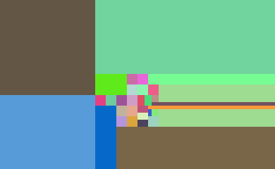
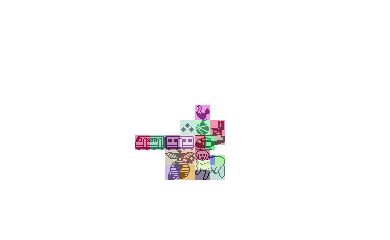
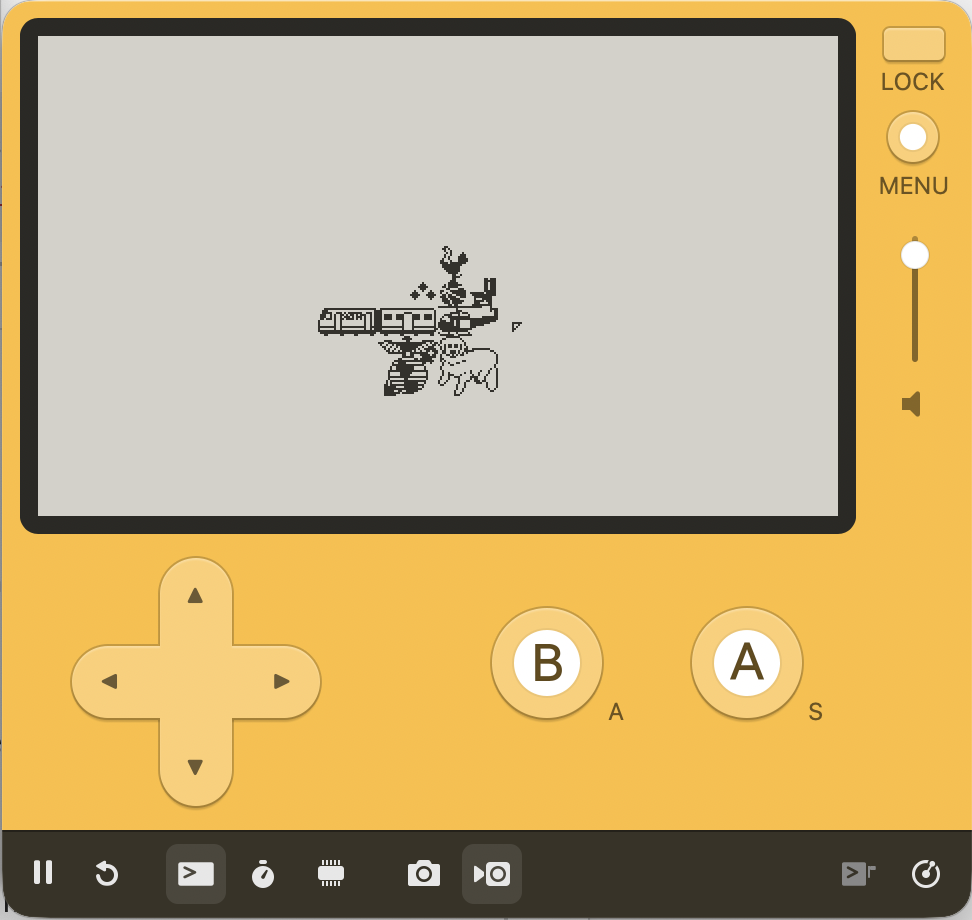

In 003-lean-into-it devlog, I mentioned how I was rethinking the puzzle/prize relationship.
I made good progress on that this weekend.
There’s a collage of images, and you work through solving each puzzle in the collage. When you solve every segment of a prize, you complete the prize. You then get to view the prize and read the blurb.

This is the current ‘map’. I call it map in all of my code, but when typing this devlog I thought ‘collage’ was a better description. Now I feel I should go rename it all over the place.
Anyway. I have a layer for reach of these thumbnails. I then have a layer specifically for splitting up puzzles. This puzzle-grid layer is made up of colorful rectangles.

When building the game, I walk the puzzle-grid image and keep track of each rectangle. This results in a collection of rectangles like this:

That’s has invalid rectangles though, which are just the transparent pixels of the image. Removing them, we’ve got something like this:
Overlaying onto the collage, we can then see the sections of each prize that make up the unique puzzles.

With all of those regions figured out, I then crop from the main collage, and point these to their respective prize.
The plan is to only draw the full section after you complete it. I don’t have that working yet though, so I’m just going through each of the sprites and stamping them:

Next is figuring out the progression through the puzzle segments. This is turning out to be a large refactor, but I think it will be well worth it. This should help with the sense of progression through the puzzles.